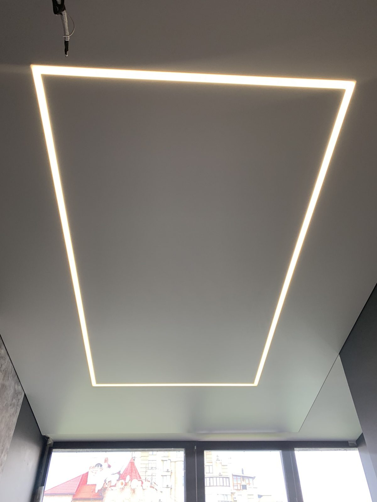
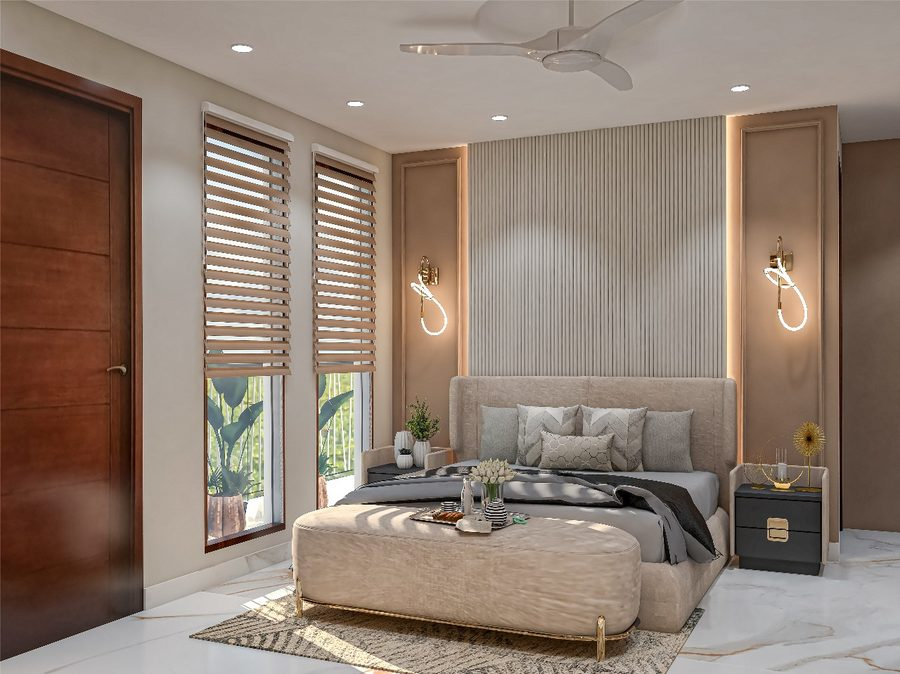
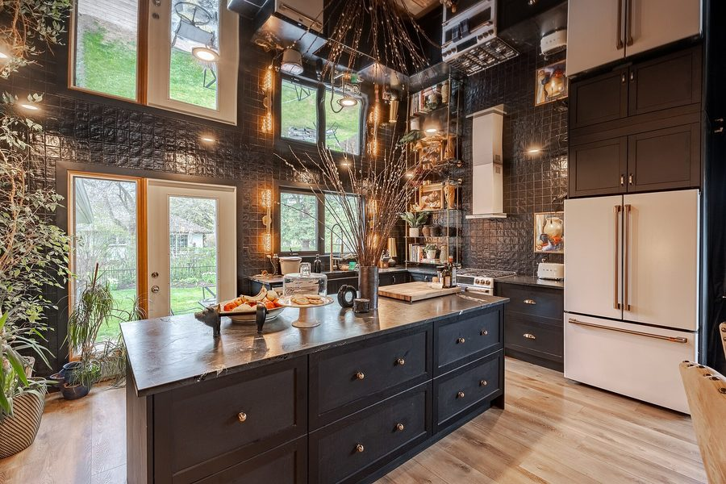
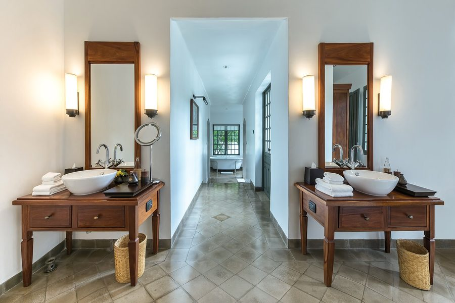
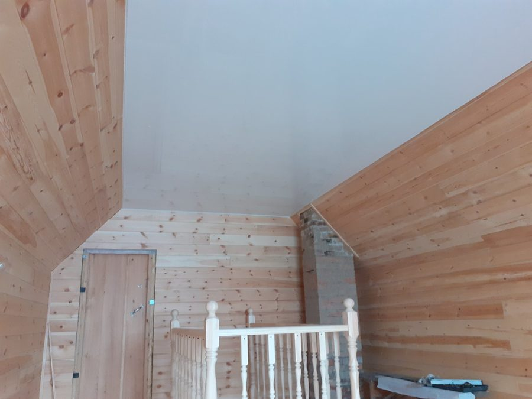

Дата в договоре
Не приедем в назначенный день — минус 1000 ₽ за каждые сутки. Пункт 4.3, он опубликован.

Москва и 30 км от МКАД · монтаж с 2014 года
Матовый потолок — от 590 ₽ за м² вместе с монтажом. Профиль, светильники и обход труб калькулятор покажет отдельными строками: смета видна целиком ещё до подписания.
Замер бесплатный, даже если вы откажетесь от заказа
Не приедем в назначенный день — минус 1000 ₽ за каждые сутки. Пункт 4.3, он опубликован.
Полотно, профиль, каждый светильник и каждый обход трубы — отдельной строкой до подписания.
Бригада приезжает со строительным пылесосом, сменной обувью и плёнкой. Мусор увозим с собой.
За сутки до монтажа присылаем, кто приедет: имя, стаж и его прошлые работы.
Расчёт стоимости
Пять шагов — и вы видите таблицу позиций с ценой за единицу, а не итог, который потом «уточнит замерщик». Это верхняя граница: после замера цена может только уменьшиться.
Подставим типовые площадь, периметр и число светильников — их можно поправить на следующем шаге.
Периметр считаем из площади для типовых пропорций комнаты. Знаете точный — впишите свой.
Выше 3 м — добавится работа на высоте.
Рассчитан автоматически.
Не знаете, что выбрать — берите матовое и стандартный багет: так делают три четверти заказов.
Считаем закладные и монтаж. Сами светильники вы покупаете где хотите — мы на них не зарабатываем.
Именно эти позиции обычно всплывают на замере как «доплата». Здесь они видны сразу.
Границы цены
Список слева — уже в смете. Список справа — то, что может добавиться, и сразу по какой цене. Никаких «нам там что-то помешало» на объекте.
Последняя строка — тоже ответ. Электрику мы не трогаем: если провода нужно тянуть заново, честнее сказать это на замере, чем взяться и сорвать срок.
Сроки
«Сделаем за день» говорят все. Мы говорим, что происходит в каждый из дней и что будет, если мы этот день сорвём.
За каждые сутки просрочки монтажа — вычитаем из итогового счёта. Считать начинаем со следующего дня после даты в договоре.
Исключения — только форс-мажор и ваш собственный перенос. Оба случая описаны в пункте 4.3 договора, и договор опубликован целиком.
Кто приедет
Так и есть: работу делает конкретный человек. Поэтому мы показываем бригаду до заказа, а за сутки до монтажа присылаем, кто именно к вам едет.
Бригадир · сложные узлы
Берёт объекты с теневым примыканием и световыми линиями — там, где ошибка в 2 мм видна с порога.
Монтажник · квартиры под ключ
Специализация — вся квартира за один день. Работает молча и быстро, за это его чаще всего и отмечают.
Монтажник · санузлы и кухни
Обходы труб и коробов. Если труба нестандартная — скажет на замере, а не в день монтажа.
Замерщик · расчёт сметы
Считает смету при вас и объясняет каждую строку. Отговорит от лишнего, если оно вам не нужно.
Не «чистый монтаж» словами, а список, который можно проверить на пороге.
Технология
Разница между потолками — не в фактуре, а в том, как полотно примыкает к стене. Это видно на разрезе и невозможно понять по фотографии.
Самый распространённый узел. Полотно заводится в багет гарпуном, шов закрывается вставкой-заглушкой. Съедает от потолка 35 мм. Стык со стеной виден как тонкая линия — это нормально и это дешевле всего. Берут в три четверти заказов.
Потолок «висит» в воздухе. Между стеной и полотном остаётся тёмный зазор 8 мм — глаз читает его как тень, а не как шов. Заглушка не нужна, кривизна стены перестаёт быть заметной. Профиль дороже в четыре раза, зато узел не стареет вместе с обоями.
Свет уходит на стену, а не в глаза. В полку профиля вкладывается лента, она подсвечивает верх стены — потолок визуально отрывается от неё. Работает только на ровной стене: любая волна станет видна в скользящем свете. Мы это проверяем правилом на замере и говорим честно, если стена не годится.
Линия света прямо в плоскости потолка. Полотно разрезается, в стык встаёт короб с лентой и матовым рассеивателем. Ширина 30 или 50 мм. Линию нельзя подвинуть после монтажа, поэтому её положение мы согласуем на замере и рисуем на схеме, которую вы подписываете.
Работы
Не «портфолио», а спецификации выполненных объектов: что за полотно, какой профиль, сколько заняло и сколько стоило. Цену объекта не публикует ни один конкурент в Москве.

Матовое · споты
Глянец · теневой профиль
Сатин · влажное помещение
Тканевое · мансардаВыбор полотна
«MSD Classic или Teqtum EURO» — вопрос не к вам. Скажите, какая у вас комната и что вас беспокоит, а марку подберём мы.
Задача
Пар, перепад температур, трубы под потолком. Плюс главный страх — что сверху зальют.
Задача
Жир оседает на потолке, над плитой — локальный нагрев. Матовое затрётся при мытье.
Задача
Каждый сантиметр на счету, а стандартный багет съедает 35 мм и рисует линию по периметру.
Задача
ПВХ-полотно такой ширины бывает только со швом. Шов виден в скользящем свете от окна.
Задача
ПВХ при минусе дубеет и трескается. Зимой в неотапливаемом доме потолок может лопнуть.
Задача
Съёмная квартира, ремонт под сдачу, бюджет ограничен. Задача — закрыть плиту и забыть.
Порядок работы
Выбираете дату и интервал замера сами. Перезваниваем подтвердить, дальше не звоним.
5 минутИрина считает смету при вас, показывает образцы, отмечает на схеме положение линий и светильников.
40–60 минутПодписываем на месте вместе со сметой и схемой. Предоплата 30 %, дата монтажа — в тексте.
30 минутЗа сутки присылаем имя мастера. Приезжаем в назначенный день, работаем с пылесосом.
3 часа — 1 деньПроходим чек-лист вместе, подписываем акт. Остаток оплачиваете только после этого.
15 минутПриёмка
«Качественно» — не то слово, которое можно проверить. Эти десять пунктов — можно. Мы отдаём чек-лист на бумаге вместе с актом.
Отзывы
Отзывы подтягиваются из карточки 2GIS как есть — вместе с четвёрками и нашими ответами. Показывать только пятёрки бессмысленно: им давно никто не верит.
Смету посчитали при мне и распечатали. В день монтажа сумма совпала до рубля — я, честно, ждала подвоха. Шамиль приехал в 9:00, к часу всё было готово, пыль собирал пылесосом сразу.
Потолок отличный, световая линия ровная. Но раскрой задержали на день — позвонили сами, предупредили, вычли 1000 ₽. Осадок остался, хотя деньги вернули. Четвёрка за срыв, а не за работу.
Хотела парящий потолок, Ирина приложила правило к стене и сказала: будет видна волна, свет её подчеркнёт. Отговорила от того, что дороже. Сделали теневой — выглядит дорого, а вышло дешевле.
Ванная, две трубы, короб. Обход сделали аккуратно, колец не видно. Отдельно отмечу бахилы и плёнку — до этого ремонтники ходили по квартире в уличной обуви, для меня это больная тема.
Вопросы
Стандартный багет — 35 мм от плиты. Теневой профиль — 45 мм. Если ставим споты, отступ определяет высота светильника: обычно 60–80 мм. Точную цифру замерщик называет на месте и вписывает в смету.
У ПВХ первые несколько часов есть слабый запах нагретого полотна — он уходит за сутки при проветривании. У тканевых полотен запаха нет вообще. Если запах держится дольше двух суток — это повод вызвать нас по гарантии.
ПВХ-полотно удержит примерно 100 литров на квадратный метр и не порвётся. Не трогайте его сами и не прокалывайте: звоните нам, сливаем воду через отверстие под светильник и просушиваем. Выезд по такому случаю — в течение 48 часов, подробности в регламенте.
Да, мягкой тканью с мыльным раствором. Нельзя: абразивы, спиртосодержащие средства, щётки и швабры с жёстким краем. Глянец после мытья протирают насухо, иначе останутся разводы.
Комната до 20 м² — 3–4 часа. Квартира до 60 м² — один день, но двумя бригадами. Всё, что сложнее (световые линии, несколько уровней, ниши под карниз), считается отдельно и вписывается в договор конкретной датой.
Правильно натянутое ПВХ не провисает — оно даёт усадку в первые сутки и дальше держит форму. Провисание означает либо ошибку натяжения, либо воду сверху. Первое — наш гарантийный случай на весь срок гарантии монтажа.
Да, 9000 ₽. Выезд бригады с оборудованием и газовым баллоном дешевле не окупается. Мы говорим об этом сразу, а не после того, как вы прождали замерщика полдня.
До 30 км от МКАД — на тех же условиях. Дальше добавляется 35 ₽ за километр в одну сторону, эта строка появляется в смете до подписания.
Замер
Приедем в выбранное окно. Если опоздаем к вам на замер — замер и первый месяц гарантийного обслуживания за наш счёт.
Перезвоним в течение 15 минут в рабочее время, чтобы подтвердить дату. За сутки до замера пришлём имя и фото специалиста, который приедет.